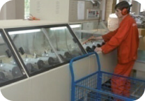

Наша история
Даты. Факты. Детали
1881
Франческ Касалс основывает компанию CASALS
1920
Запущен литейный цех, что позволило начать серийное производство сверлильных станков и фрезеров
1922
Создано собственное производство электродвигателей Впервые начато производство универсальных дрелей
1924
CASALS стал лидером на Испанском рынке электроинструмента Запущено производство промышленных вентиляторов
1959
Построены новые производственные здания, завод приобретает современный вид
1980
Присоединение к крупной Итальянской промышленной группе FREUD, расширение продаж на европейском рынке
2003
Тех.перевооружение завода, начало выпуска профессиональной линейки FREUD Industria
2010
Завод CASALS в Испании переходит в собственность «ИНТЕРСКОЛ»
Вниисми
1967
Создание ВНИИСМИ
1991
Создание НПФ «ИНТЕРСКОЛ» на базе ВНИИСМИ
2002
Строительство собственного завода полного цикла по производству электроинструмента – Быковский Электроинструментальный завод, БЭЗ
2009
Перенос производства из Италии на площадку Быковского завода в Подмосковье
Выпущено юбилейное 10-ти миллионное изделие под брендом «ИНТЕРСКОЛ» - золотая дрель ДУ-750 ЭР
2014
Запуск производства на заводе в ОЭЗ «Алабуга»
2022
Запуск завода в ОЭЗ «Алабуга» после глубокой модернизации технологических процессов
1949
Сильвано Фелисатти создает компанию FELISATT
1957
Разработан первый в мире переносной торцовочный станок для дерева и профилей из лёгких металлических сплавов - модель SF18
1961
Создан первый в мире торцовочный станок с поворотным и фиксирующимся столом - модель SF60
2000
Начало массового производства профессиональной деревообрабатывающей техники по заказам ведущих компаний (METABO, FLEX, FEIN, KRESS, BOSCH, ROTHENBERGER и др.)
2009
Компания «FELISATTI» переходит в собственность «ИНТЕРСКОЛ»
Регистрация Европейской компании Interskol power tools S.L
Создание совместного предприятия ICG – Interskol Crown Group в КНР